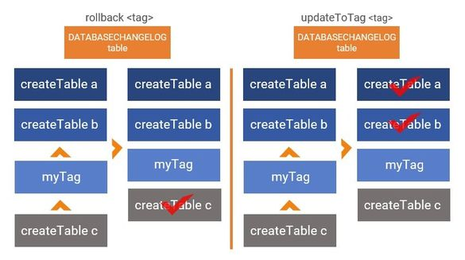

tag <tag string> commandThe tag <tag string> command marks the current database state so you can roll back or deploy changes in the future.
The tag <tag string> command is typically used to mark the current database state by creating a new row in the updateToTag <tag> command to deploy all changes to this tag or the rollback <tag> command to roll back all changes under this tag.
The image below shows the tag myTag creates a new entry in the

If you run rollback myTag command, it will roll back only createTable с value. If you run updateToTag <tag> command, it will deploy createTable a and createTable b without deploying createTable с.
It is best practice to tag your
tag <tag string> commandTo run the tag <tag string> command, you need to specify your driver, class path, URL, and user authentication information in your
Then run the tag <tag string> command:
liquibase --changeLogFile=myChangelog.xml tag myTagEnter the name of the myChangelog.xml and myTag.
tag <tag string> global attributes| Attribute | Definition | Requirement |
|---|---|---|
|
|
The root |
Required |
|
|
The JDBC database connection URL |
Required |
|
|
The database username |
Required |
|
|
The database password |
Required |
tag <tag string> command attributes| Attribute | Definition | Requirement |
|---|---|---|
|
|
The tag you can add to |
Required |
Liquibase Pro 3.10.2 by Datical licensed to Liquibase Pro Customer until Tue Sep 22 19:00:00 CDT 2020
Successfully tagged 'SCHEMA1@jdbc:oracle:thin:@localhost:1521:ORCL'
Liquibase command 'tag' was executed successfully.
Cat was